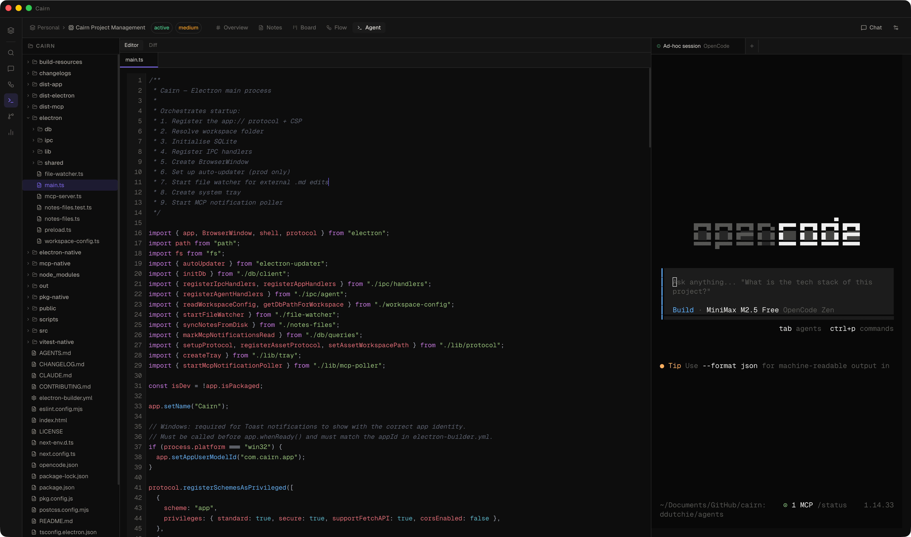
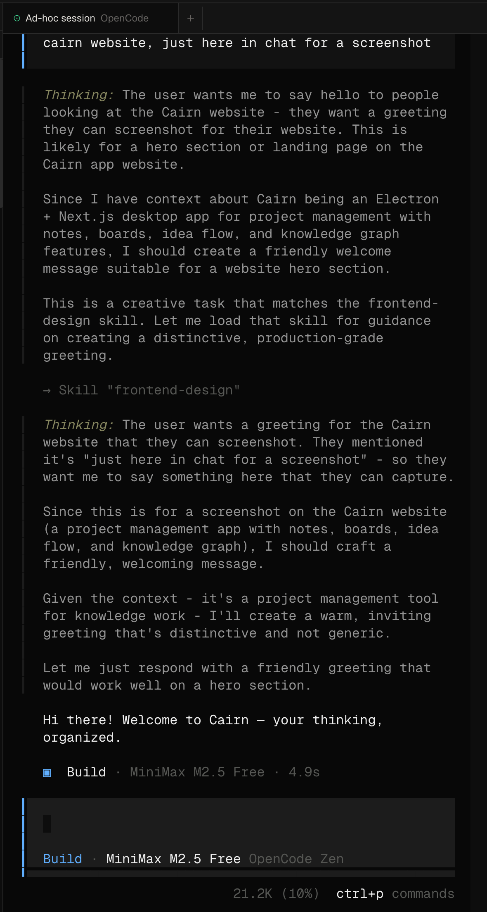
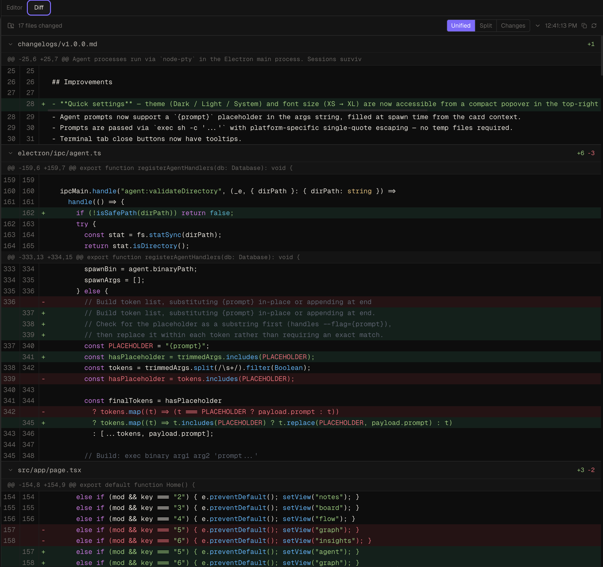

Agent Workspace
Cairn ships a built-in stateful coding agent and a terminal workspace for external CLI agents. Both are accessible from the Agent view (⌘5) and integrate directly with your board tasks and notes.
Two agent modes
The Agent view supports two ways of working:
| Mode | How it works | Best for |
|---|---|---|
| Cairn Agent | Built-in multi-turn loop — no binary required. The agent calls tools, streams output to a chat UI, and updates your board and notes as it works. | Coding tasks scoped to your project, where you want the agent to stay in sync with your Cairn board |
| External binary | Spawn Claude Code, OpenCode, Aider, or any CLI tool in a live xterm.js terminal alongside the file tree, editor, and diff viewer. | Agents with their own TUI, or workflows that require an interactive shell |
Cairn Agent
The Cairn Agent is a stateful multi-turn coding agent built directly into the app. It uses the same AI endpoint you configure in Settings → AI & Chat — no extra setup. The agent runs a tool-call loop: it can read and write files, run shell commands, search your codebase, and read and update your Cairn board and notes. All tool activity streams to the chat as live chips, and the session history persists across view switches.
Starting a Cairn Agent session
There are two ways to start a session:
- From a task card — open the card detail panel on the Kanban board, click Spawn Agent, and choose Cairn Agent in the modal. The prompt is pre-filled from the card title and description.
- Ad-hoc — open the Agent view and click the + button in the session tab bar. Select Cairn Agent, enter a prompt and the code directory to work in, and confirm.
Before spawning, set a code directory on the project Overview page — this is the root folder the agent reads and writes. If it hasn't been set, the spawn modal will prompt you to enter one.
Tool chips
Every tool call the agent makes appears as a chip inside the message bubble. While the tool is running, the chip shows a spinner and the tool label. When it completes, the chip updates to a check or cross, and write-tool chips show an expandable output block with the result. Read-only tools (file reads, searches, list calls) suppress their output to keep the chat clean.
Chips for Cairn write tools (ensure_note, create_task, update_task, etc.) include a clickable reference link — clicking it navigates to the created or updated item in the Notes or Board view.
Subagents
The Cairn Agent can spawn focused child agents for deep sub-tasks using the spawn_subagent tool. Each subagent runs its own tool-call loop, streams tokens and tool chips, and returns a result to the parent. Subagents appear as collapsible inline blocks in the parent chat, with their own context usage ring. The parent ring only reflects parent-step usage; subagent usage is tracked independently.
Context usage ring & compaction
A small ring in the agent chat header shows how much of the model's context window the current session is using. The ring fills as the conversation grows and turns red when usage is high. The context window size is set in Settings → AI & Chat → Context window — presets are 8k, 32k, 128k, and 200k tokens.
When usage reaches 80% the agent automatically compacts the context. It summarises the oldest portion of the conversation with a background LLM call, injects the summary back as a structured context block, and keeps the 6 most recent turns verbatim. Compaction runs without interrupting the current turn — the status bar shows "Compacting context…" while it is in flight. The full conversation history is always preserved in session storage; only what is sent to the model is trimmed.
Automatic retry
Transient API errors — rate limits, overloaded responses, and server errors — are retried automatically without ending the session. The agent waits with exponential backoff (2 s, 4 s, 8 s) between attempts and shows a countdown in the status bar: "Transient error — retrying (1/3) in 8s…". Clicking the stop button cancels any in-progress retry immediately.
Mandatory workflow
The Cairn Agent follows a built-in project workflow on every session:
- Orient — reads the active project context and moves the linked task card to In Progress
- Document as you go — uses
ensure_noteto create or update a session note with findings and decisions (idempotent — no duplicate notes) - Capture out-of-scope tasks — anything discovered but not actioned is added as a board task for later
- Wrap up — writes a session summary note and moves the task card to Review or Done
Available tools
| Tool | What it does |
|---|---|
read | Read a file from the code directory |
write | Write or overwrite a file |
edit | Replace an exact string in a file (surgical, not full-file rewrite); returns a unified diff of the change |
bash | Run a shell command in the code directory |
grep | Search file contents by regex with optional file-type filter |
find | List files matching a glob pattern |
ls | List directory contents |
spawn_subagent | Spawn a focused child agent for a deep sub-task |
| All Cairn MCP tools | Read and write notes, tasks, projects, idea flow, and the knowledge graph |
All file reads and writes are validated against the registered code directory. The agent cannot read, write, or list files outside that path. Shell commands run with the code directory as the working directory.
External agent workspace
The external agent workspace is a three-pane layout for running CLI tools in a live terminal:
- File tree — a lazy-expanding browser of your project's code directory
- Editor / Diff — a tabbed code editor and git diff viewer
- Terminal — tabbed xterm.js sessions, one per agent run
Panes resize by dragging the dividers. Sessions survive navigation — switching to Notes or Board and back does not kill a running process.

Setting up a code directory
Each project has a code directory — the root folder the file tree and agent sessions operate in. Set it from the project Overview page: click the terminal-icon row below the project header, type or paste the path, and press Enter. On macOS and Windows you can also click Browse to pick a folder.
The code directory is validated before any agent spawns. All file I/O from the agent workspace is confined to paths within registered code directories — the app will not read or write outside them.
Registering a coding agent
Go to Settings → Coding Agents and click Add agent. Each agent has four fields:
| Field | Description |
|---|---|
| Name | Display name shown in the spawn modal and terminal tab |
| Binary path | Absolute path to the CLI binary (e.g. /usr/local/bin/opencode) |
| Args | Arguments passed to the binary (see Prompt delivery below) |
| Default | Pre-selected in the spawn modal |
Prompt delivery and the {prompt} placeholder
The Args field controls how the spawn-time prompt reaches the agent binary. Use the {prompt} placeholder anywhere in the args string — it is replaced with the prompt text at spawn time.
| Args value | What runs | Use case |
|---|---|---|
| (empty) | binary | Interactive TUI — no prompt injected |
{prompt} | binary 'prompt text' | OpenCode first-positional pre-fill |
--prompt {prompt} | binary --prompt 'prompt text' | OpenCode explicit flag |
--message {prompt} | binary --message 'prompt text' | Claude Code / Aider style |
--flag={prompt} | binary --flag='prompt text' | Inline flag syntax |
Prompts are delivered via exec sh -c '…' with single-quote escaping — safe for any length, newlines, colons, or special characters.
Spawning a session
There are two ways to start a session:
- From a task card — open the card detail panel on the Kanban board and click Spawn Agent. The prompt is pre-filled from the card title and description. Pick an agent, edit the prompt if needed, and confirm.
- Ad-hoc — open the Agent view and click the + button in the terminal tab bar, or click New session in the empty state. Type a prompt or leave it blank for an interactive TUI session.
On spawn, a new terminal tab opens immediately and the agent process starts. The tab shows the agent name and a live status dot — green while running, grey on exit.
Terminal
Each session runs in a full xterm.js terminal. You can type directly into the terminal to interact with the agent or send follow-up instructions. The terminal preserves full scroll history — switch tabs and back without losing output.

Closing a tab sends a kill signal to the process and removes it. The terminal font size tracks your Cairn font scale setting automatically.
File tree
The left pane shows the code directory as a lazily-expanding tree. Folders expand on click; files open in the editor. Dotfiles and hidden entries are filtered out. The tree is scoped to the registered code directory — it cannot navigate above it. Press ⌘⇧F to activate a filename search input at the top of the file tree.
Editor
The centre pane hosts a multi-file CodeMirror 6 editor. Click any file in the tree to open it in a tab. Multiple files can be open simultaneously — switching tabs is instant with no reload, and scroll position and undo history are preserved per file.
- Syntax highlighting for TypeScript, JavaScript, Python, Rust, Go, and 15+ other languages — auto-detected from the file extension
- Dirty-state dot on the tab when a file has unsaved changes
- ⌘S / Ctrl+S to save — writes directly to disk
- Markdown files show a Preview toggle that renders the file in read mode
- Images (PNG, JPG, GIF, WebP, SVG, and more) are displayed inline rather than as text
Git diff viewer
The Diff tab in the editor pane polls git diff HEAD every 5 seconds and shows all uncommitted changes in the code directory, including untracked files.

Three view modes are available:
- Unified — standard unified diff with context, additions, and deletions
- Split — side-by-side old and new columns, paired by hunk
- Changes — unified diff with context lines hidden; only added and deleted lines
File sections are collapsible. A Copy patch button copies the raw diff to the clipboard. A manual Refresh button is available in the toolbar alongside the last-refreshed timestamp.
Keyboard shortcuts
- ⌘5 / Ctrl+5 — open Agent view
- ⌘S / Ctrl+S — save the active file in the editor
- ⌘F / Ctrl+F — find/replace panel in the editor (when editor is focused)
- ⌘⇧F / Ctrl+⇧F — toggle filename search in the file tree
All file reads and writes from the agent workspace are validated against the registered code directories. The app will refuse to read, write, or list files outside those paths. Binary paths are also validated before any process is spawned.